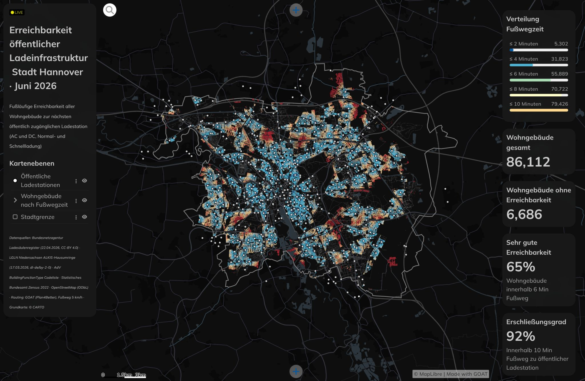

Overview
How far do residents actually walk to reach a public EV charger in Hannover? This GOAT dashboard answers that at building level — mapping walking-distance access to every public charging station across the entire city, from every residential building.
The analysis uses the official Ladesäulenregister from Bundesnetzagentur (April 2026) for charger locations and covers both AC and DC, Normalladung and Schnellladung. But the actual point of this project is the workflow: the routing, isochrone generation, residential building intersection, and SQL queries are built once in GOAT and are immediately replicable for any German city — the workflow is the reproducible unit, not the city.
Key Numbers
- 86,112 residential buildings (Wohngebäude) analysed
- 1,049 public charging stations — Ladesäulenregister, Bundesnetzagentur, April 2026
- 92 % of residential buildings within a 10-minute walk of a charger
- 65 % within a 6-minute walk
- 6,686 buildings with no charger within walking range
Methodology
Charging Station Data — Ladesäulenregister
Loaded all 1,049 public charging stations in Hannover from the Bundesnetzagentur Ladesäulenregister (April 2026), covering both AC and DC stations, and both Normalladung (standard) and Schnellladung (fast charging) types.
Network-Based Walking Isochrones
Generated network-based walking catchments for each charging station in GOAT — using actual street routing rather than straight-line buffers — to produce accurate walking-time zones at 6 and 10 minutes.
Building-Level Intersection
Intersected the isochrones with 86,112 residential buildings (Wohngebäude) to determine, at building level, which residents are within 6 minutes, within 10 minutes, or outside walking range entirely — giving a granular picture of coverage gaps across Hannover.
Replicable Workflow
The entire pipeline — routing, isochrone generation, building intersection, SQL queries — is one workflow in GOAT. No rebuilding from scratch. Point it at a different city and the results update. The workflow is the reproducible unit.
Tools & Technologies
- GOAT (Plan4Better) — network routing, isochrone generation, building intersection, dashboard
- Ladesäulenregister, Bundesnetzagentur — public EV charger locations (April 2026)
- Wohngebäude dataset — residential building footprints for Hannover
- SQL — queries tying the routing and intersection results together
Outcome
Delivered a building-level EV charging accessibility dashboard for Hannover showing that while 92 % of residential buildings are within a 10-minute walk of a public charger, 6,686 buildings remain entirely outside walking range — and pinpointing exactly where those gaps are. The workflow is fully replicable for any German city using the same open data sources.